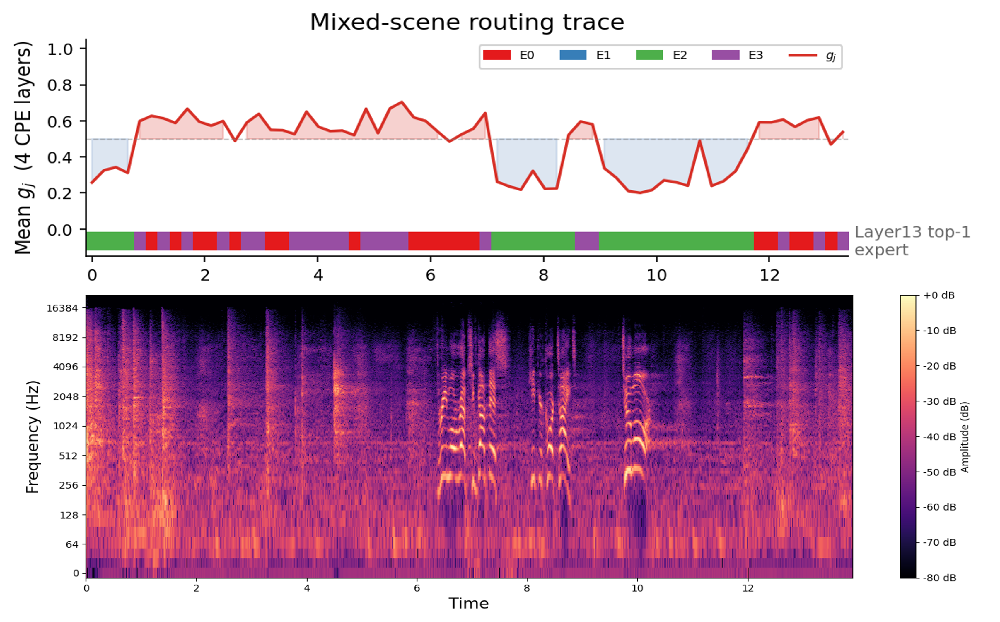

Complex Scene
Natural-language promptIn a busy gym, a trainer shouts, “Three more reps, you’ve got this! Keep your core tight. Two more!” Weight plates clank, treadmills run, people breathe heavily, and battle ropes strike the floor around him.
Structured prompt
A trainer shouts encouragement over the sounds of a busy gym. <type>mixed</type> <lang>en</lang> <speech>Three more reps, you’ve got this! Keep your core tight. Two more!</speech> <speaker_count>1</speaker_count> <relation>trainer addressing gym participants</relation> <vocal>trainer shouting encouragement</vocal> <sfx>weight plates clanking, treadmills running, heavy breathing, and battle ropes striking the floor</sfx> <ambience>busy gym</ambience> <texture>foreground speech over dense gym activity</texture>
SonicWeave output

Routing trace